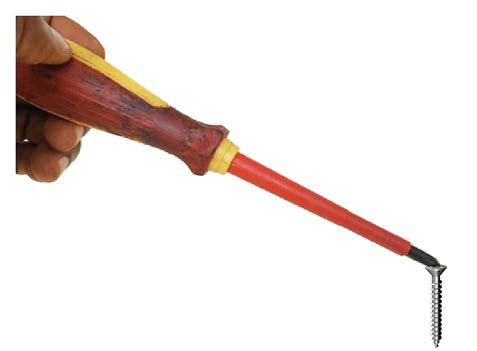

Maintenance of electronic devices
Mobile phone, radio and computer technicians use magnetic screwdrivers to attract small screws used to assemble phones, radios and computers. Figure 9 shows a screw attracted to a magnetic screwdriver.

Making electric bell
Magnets are used to make an electric bell. When the switch button is pressed, an electric current produces a magnetic force. This magnetic force attracts an iron rod or striker causing it to strike the gong and produce a sound.